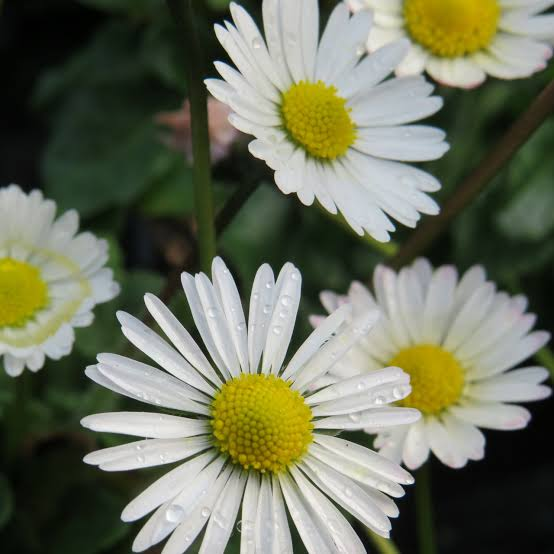
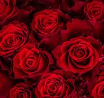
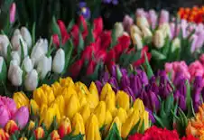
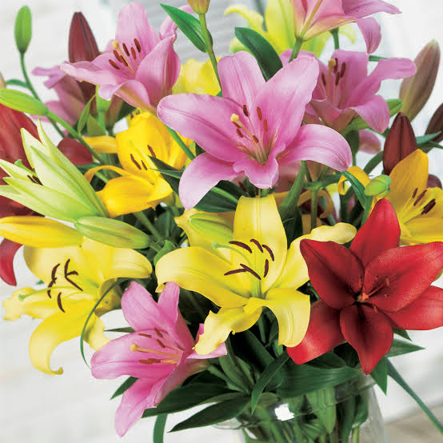

FLORES
MARGARITAS
La margarita es una flor popular que pertenece al género Bellis, dentro de la familia de las asteráceas. Esta planta herbácea es conocida por su aspecto sencillo y atractivo, lo que la convierte en una de las flores más queridas en jardines y arreglos florales. Las margaritas tienen una estructura característica: sus pétalos son generalmente blancos y rodean un disco central amarillo, aunque también existen variedades en otros colores como rosa, rojo o morado. Originarias de Europa, las margaritas se han adaptado a diversos climas y se pueden encontrar en muchas partes del mundo. Su hábitat natural incluye praderas, campos y bordes de caminos, donde crecen de forma silvestre. Estas flores florecen en primavera y verano, lo que las convierte en un símbolo de renovación y alegría. Además de su belleza estética, las margaritas tienen un significado simbólico en varias culturas. A menudo representan la pureza, la inocencia y la simplicidad. En algunas tradiciones, se asocian con el amor verdadero y se utilizan en arreglos florales para expresar sentimientos profundos. El cultivo de margaritas es relativamente sencillo. Prefieren suelos bien drenados y un lugar soleado, aunque pueden tolerar algo de sombra. Son resistentes y, una vez establecidas, requieren poco cuidado, lo que las convierte en una excelente opción para jardineros novatos. También atraen polinizadores como abejas y mariposas, lo que contribuye a la biodiversidad del jardín. En resumen, la margarita es una flor emblemática que no solo embellece los espacios, sino que también aporta significado y simbolismo. Su presencia alegre y sencilla la convierte en una favorita en la jardinería y la decoración.
ROSAS
La rosa es una flor emblemática y ampliamente reconocida, perteneciente al género Rosa y a la familia de las rosáceas. Existen más de 150 especies y una infinita variedad de híbridos, lo que la convierte en una de las flores más diversas y populares del mundo. Las rosas son apreciadas no solo por su belleza, sino también por su fragancia, que varía según la especie y el cultivar. Las rosas pueden encontrarse en casi todos los colores imaginables, cada uno de los cuales tiene un significado simbólico particular. Por ejemplo, las rosas rojas suelen representar el amor y la pasión, las rosas blancas simbolizan la pureza y la inocencia, mientras que las rosas amarillas a menudo se asocian con la amistad y la alegría. Este simbolismo ha hecho que las rosas sean una elección popular en ocasiones especiales, como bodas, aniversarios y celebraciones. El cultivo de rosas puede ser un poco más exigente que el de otras flores. Prefieren suelos bien drenados, luz solar directa y un riego adecuado. Además, requieren una poda regular para fomentar un crecimiento saludable y abundante. Las rosas pueden cultivarse en jardines, macetas o invernaderos, y su cuidado puede incluir la prevención de enfermedades y plagas. demás de su uso ornamental, las rosas tienen aplicaciones en la industria de la perfumería y la cosmética, gracias a su aceite esencial, que se extrae de los pétalos. También se utilizan en la elaboración de productos alimenticios, como mermeladas y tés. En resumen, la rosa es una flor que combina belleza, fragancia y simbolismo. Su diversidad y su importancia cultural la convierten en un elemento fundamental en la jardinería y en la expresión de emociones en diversas ocasiones.
TULIPANES
El tulipán es una flor de origen perenne que pertenece al género Tulipa, dentro de la familia de las liliáceas. Estas plantas son especialmente populares en todo el mundo, pero tienen un vínculo cultural fuerte con los Países Bajos, donde se cultivan en grandes cantidades y se celebran festivales en su honor. Los tulipanes son conocidos por su forma distintiva de copa y su amplia gama de colores, que incluye tonos vibrantes como rojo, amarillo, rosa, blanco y morado, así como variedades con patrones únicos. Los tulipanes florecen en primavera y son el resultado de un bulbo subterráneo, que almacena nutrientes y energía para la planta. La floración suele ocurrir entre marzo y mayo, dependiendo del clima y la especie. Existen más de 100 especies de tulipanes, así como numerosas variedades híbridas, cada una con características específicas en términos de tamaño, forma y color. l simbolismo de los tulipanes varía según su color. Por ejemplo, los tulipanes rojos son comúnmente asociados con el amor, mientras que los amarillos simbolizan la alegría y la amistad. Debido a su belleza, estos tulipanes se utilizan frecuentemente en arreglos florales y decoraciones. Cultivar tulipanes es relativamente sencillo, aunque requieren ciertas condiciones para prosperar. Prefieren suelos bien drenados y un lugar soleado. Los bulbos se plantan en otoño, antes de que el suelo se congele, lo que les permite establecerse antes de la temporada de crecimiento. En resumen, el tulipán es una flor emblemática que no solo aporta belleza a los jardines, sino que también lleva consigo un rico simbolismo cultural. Su facilidad de cultivo y variedad de colores lo hacen un favorito en la jardinería y la decoración floral
LIRIOS
Los lirios son flores pertenecientes al género Iris, que forma parte de la familia de las iridáceas. Hay alrededor de 300 especies de lirios, y se pueden encontrar en diversas partes del mundo, especialmente en regiones templadas. Estas plantas son conocidas por sus grandes y llamativas flores, que pueden variar en colores, incluyendo tonos de azul, púrpura, amarillo, blanco y naranja. La forma de las flores es distintiva, con tres pétalos exteriores, llamados "sépalos", y tres pétalos interiores, conocidos como "pétalos", que a menudo tienen formas y texturas únicas. Los lirios son apreciados no solo por su belleza, sino también por su simbolismo. En muchas culturas, representan la pureza, la fertilidad y la renovación. En el arte y la literatura, los lirios han sido un símbolo de nobleza y elegancia, siendo utilizados en muchas obras maestras a lo largo de la historia. l cultivo de lirios es relativamente sencillo, aunque requieren ciertas condiciones para prosperar. Prefieren suelos bien drenados y pueden crecer a pleno sol o en sombra parcial. Son plantas perennes, lo que significa que vuelven a florecer cada año, y su cuidado implica un riego adecuado y la eliminación de flores marchitas para fomentar un crecimiento saludable. Además de su uso ornamental, algunas especies de lirios tienen aplicaciones en la medicina tradicional y en la elaboración de productos cosméticos. Sin embargo, es importante mencionar que algunas variedades pueden ser tóxicas para animales, especialmente los gatos. En resumen, los lirios son flores fascinantes que combinan belleza y simbolismo. Su diversidad de colores y formas los hace populares en jardines y arreglos florales, mientras que su fácil cultivo los convierte en una opción ideal para muchos jardineros.
